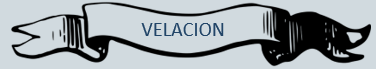

|
||||
Queremos que sean parte de nuestra historia |
||||
 |
 |
|||
Yessenia Sierra Salazar |
& |
Luis Blanc |
||
Deseamos que sean nuestros PADRINOS DE |
||||
|  | ||||
Los padrinos de velación o sacramento son los padrinos principales. El sentido de estos padrinos es que ellos deben velar por el matrimonio de los recién casados y su futuro. Los padrinos de velación son el apoyo emocional y espiritual de los nuevos esposos. Debido a esto, se recomienda elegir a una pareja ejemplar y que sea admirada por la nueva pareja.
 |
Los hemos escogido porque creemos que son una pareja que se ama pero que sobre todo se divierte junta. |
Esperamos en un futuro poder tener una relación como la suya en la que se forma un equipo, una amistad y una gran complicidad |